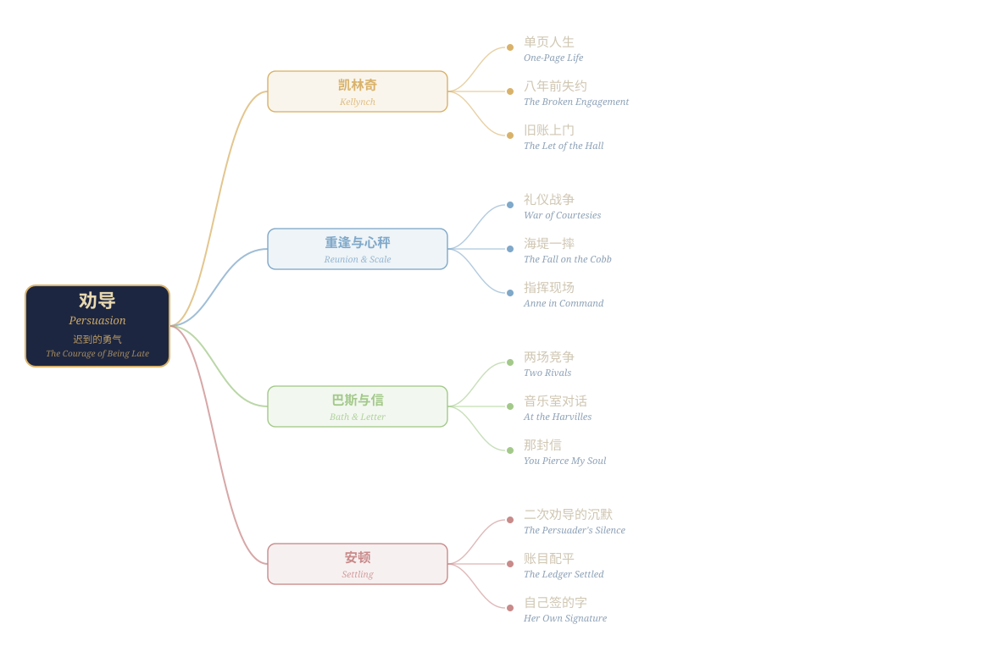

劝导
〇 · 书籍信息
基本信息
| 书名 | 《劝导》（Persuasion）——书名的双面性：十九岁那年，拉塞尔夫人劝她退婚；二十七岁这年，历史劝她再试一次——「劝」这个动词一生只该被允许使用一次，而且要担责 |
|---|---|
| 作者 | 奥斯丁（1775–1817）六部小说的收官之作，写于病中（1816），次年去世。与早期作品相比，笔调更冷、更谦逊——讽刺还在，但刀口收窄成叹息 |
| 结构 | 24 章：凯林奇（失约的过去）→ 巴斯（重逢的现在）→ 莱姆里吉斯（危机与传言）→ 白塔楼（信与结局）——全书以一封信解决一切：奥斯丁最大的浪漫，用最公文的载体送达 |
| 体裁 | 婚恋社会小说：财产、阶序、婚姻市场的精确账目照旧，但本书的主角是个「过了行情」的次女——奥斯丁第一次把「错过」写成主题 |
| 一句话 | 她十九岁听劝退了婚，二十七岁在旧地重逢——「你刺穿了我的灵魂。我一半是痛苦，一半是希望。告诉我不会太迟。」——全书只有一封信，却抵得上所有小说的情话总量。 |
一 · 核心主题总览
两次劝导之间埋着四组母题：① 劝导的责任（全书引擎）
十九岁的安妮被拉塞尔夫人劝退婚约——温特沃斯无产无名，未来可疑。八年后真相揭晓：她的顺从是错的，劝导者的自信也是错的——奥斯丁最终不赦免任何人，包括安妮自己（「如果我早一点嫁给他」的自责与自证反复拉锯）。
② 行情与价值（婚姻市场的时钟）
安妮二十七岁「行情」见跌，玛丽安们十九岁正当红——奥斯丁用埃利奥特家的族谱戏（只看《准男爵录》）反衬：社会以「翻族谱的页码」计时，人却用「心动的秒差」计时。
③ 忠贞与复燃
温特沃斯八年海战积功归来，带一身荣耀与满腔旧恨；他故意在路易莎与安妮之间挑起「可爱度竞赛」——莱姆里吉斯海堤那摔，把所有人的心秤摔出了原形。
④ 安静的领导力
在莱姆里吉斯的事故现场，是安妮指挥全场：谁去请医生、谁扶住伤者。奥斯丁全书最高的一次致敬不靠爱情，靠专业判断：被劝走八年的人，反而成了唯一能下指令的人。
二 · 第一段 凯林奇的账—— 族谱 · 失约 · 迁屋 ——
只读一本书的准男爵
开篇即全书最著名的讽刺：沃尔特爵士的阅读量仅限一本《准男爵录》——只翻到自己那一页。虚荣被写成一个阅读行为：他的人生只有一页。债务迫使全家出租凯林奇迁往巴斯——房子租给了温特沃斯的姐姐与姐夫：旧账就这样被快递到了家门口。
◆ 语言学习 · 开篇 · 讽刺
| baronetage /ˈbærənɪtɪdʒ/ | n. 准男爵录 —— 沃尔特的唯一读物：族谱=他的人格；自称 social status 的字典 |
|---|---|
| vanity /ˈvænəti/ | n. 虚荣 —— 例句：personal vanity（爵士的核心）。vanity fair「名利场」词源 |
| retrench /rɪˈtrentʃ/ | v. 削减开支 —— 例句：forced to retrench（迁屋动因）。商务英语高频词——体面人的「减少消费」说法 |
| tenancy /ˈtenənsi/ | n. 租约 —— 例句：let Kellynch Hall（出租祖宅）。tenant n. 租户——阶级的金融语法 |
句型 ｜ 「Sir Walter Elliot… was a man who, for his own amusement, never took up any book but the Baronetage.」——插入语（for his own amusement）先埋笑点，主句才落锤（never took up any book but…）。奥斯丁式讽刺的标准机位：让插入语当捧哏。
八年前的劝导与失约
插叙补齐旧账：海军温特沃斯求婚，安妮心动；拉塞尔夫人列举风险（无产、无名、海上无定所），安妮「被劝导」退婚。奥斯丁的公平：她不把责任推给拉塞尔夫人——「劝导」之所以成功，因为安妮自己也信了。此后八年，她拒绝所有求婚者，用「行情折旧」的方式忠于一个已经把她删掉的人。
◆ 语言学习 · 劝导 · 旧账
| persuade /pəˈsweɪd/ | v. 劝服 —— 书名的动词：persuade sb against doing「劝阻」——全书最重要的一次劝阻 |
|---|---|
| prudence /ˈpruːdns/ | n. 审慎 —— 例句：a prudential reluctance（拉塞尔夫人的立场）。prudent adj.；审慎与怯懦的界碑 |
| admiral /ˈædmɪrəl/ | n. 海军上将 —— 温特沃斯的终点军衔：warfare as promotion——英国海军的阶序神话 |
| dowry? →(改) portion /ˈpɔːʃn/ | n. 嫁妆，份产 —— 例句：small portion（安妮的行情）。婚姻市场的金融术语 |
习语 ｜ consult a friend 咨询友人——拉塞尔夫人的职业场景；a very strong degree of attachment 极深的依恋——奥斯丁用账目词写爱情：attachment 的本质是 attachment of claims（权利的附着）。
三 · 第二段 重逢与心秤—— 温特沃斯 · 路易莎 · 海堤 ——
重逢的礼仪战争
重逢是全书的技术核心：两人一个月内多次同席，谁先开口、谁的目光先移、谁被允许沉默——奥斯丁用「礼仪延迟」写心理时间差：他要冷战，她要体面，两个人都误会对方已经翻篇。温特沃斯用「夸路易莎坚定」鞭打安妮的「被劝服」——他不知道：坚定与否，正是她八年痛的根源。
◆ 语言学习 · 重逢 · 礼仪
| courtesy /ˈkɜːtəsi/ | n. 礼数 —— 例句：cold courtesy（重逢礼仪）。courteous adj.；社交语言的温度计 |
|---|---|
| resentment /rɪˈzentmənt/ | n. 积怨 —— 例句：his settled resentment（温特沃斯的行李）。同族词 resentment 在 15 册（波罗）出现过 |
| mortify /ˈmɔːtɪfaɪ/ | v. 使难堪 —— 例句：mortified by comparison（安妮的处境）。mortification n.——羞耻的旧式说法 |
| coax? →(改) gallantry /ˈɡæləntri/ | n. 绅士风度（求爱姿态）—— 温特沃斯的武器：向别的女士献殷勤=对旧爱开火 |
句型 ｜ 「He had not forgiven Anne Elliot. She had used him ill…」——短句判决 + 因果连击：奥斯丁的心理陈述从不绕弯。简短判词句（She had used him ill）是社交小说的心跳：一句话，两败俱伤。
莱姆里吉斯：一摔见真心
海堤一摔：路易莎执意要跳、坚持「不跳不行」，温特沃斯伸手不及——她颅伤昏迷。事后温特沃斯才明白：「坚定」的极限是固执——路易莎式的坚定差点赔上性命，安妮式的「被劝」曾避免过更大的悬崖。奥斯丁在此完成全书的思想校正：美德不是「从不被劝」，是「劝的人值不值得、时机对不对」。
◆ 语言学习 · 事故 · 校正
| concussion /kənˈkʌʃn/ | n. 脑震荡 —— 例句：concussion on the head（诊断）。医学术语入小说：奥斯丁的精确 |
|---|---|
| obstinacy /ˈɒbstɪnəsi/ | n. 固执 —— 与 obstinate（16 册）同族：坚定与固执共用词根——评价差异全在结果 |
| consternation /ˌkɒnstəˈneɪʃn/ | n. 惊骇 —— 例句：general consternation（现场）。恐慌的书面量级 |
| preside /prɪˈzaɪd/ | v. 主持 —— 例句：Anne presiding over the rescue（指挥现场）。preside over——她终于被允许下指令 |
习语 ｜ take command 接管指挥——安妮的意外高光；a firm mind vs a determined obstinacy——奥斯丁的语义校正：同一个词根，事故前后各被读成一种美德。
四 · 第三段 巴斯与信—— 竞争者 · 会客厅 · 一封信 ——
两场竞争与一次误会
巴斯场子：埃利奥特先生的旧情复燃（盯准了爵位继承的行情）与温特沃斯的醋意并置；安妮被两个追求者夹住，却始终只在数一个人的下颌线与嗓音。误会的顶点：温特沃斯以为安妮要与埃利奥特订婚——奥斯丁的讽刺：两个聪明人，全靠「不敢问」拖延了半本书。
◆ 语言学习 · 竞争 · 误会
| heir /eə/ | n. 继承人 —— 例句：heir presumptive（埃利奥特的算盘）。heir/inherit 词族（15 册已记） |
|---|---|
| jealousy /ˈdʒeləsi/ | n. 嫉妒 —— 例句：a pang of jealousy（温特沃斯）。jealous adj.；嫉妒=自尊的利息 |
| prevail /prɪˈveɪl/ | v. 占上风 —— 例句：prevailing reports（流言）。prevail upon「说服」——书名动词的另一面 |
| conjecture /kənˈdʒektʃə/ | n. 猜测 —— 例句：mere conjecture（误会机制）。全书的故障源：把猜测当情报 |
句型 ｜ 「She had been forced into prudence in her youth, she learned romance as she grew older—the natural sequel of an unnatural beginning.」——对仗 + 补刀：年轻被迫审慎，年长自学浪漫。「 unnatural beginning」一锤定音：奥斯丁替所有早熟失约的人发了免责申明又立刻收回。
那封信：全书唯一的情书
温特沃斯在音乐室偷听她与哈维尔的对话——「女性爱得最久」——当场信笔写下那封全书唯一的信：「你刺穿了我的灵魂。我一半是痛苦，一半是希望。告诉我不会太迟。」奥斯丁的浪漫主义全部押在这一次：不写心动，写「不敢问」的解除——信是唯一没有社交礼仪审查的信道。安妮的回信同样短促：她只能用笔，因为嘴上还有八年的规训。
◆ 语言学习 · 信 · 峰值
| pierce /pɪəs/ | v. 刺穿 —— 例句：You pierce my soul（信首）。piercing adj.；全书最重的一个动词 |
|---|---|
| agony /ˈæɡəni/ | n. 极度痛苦 —— 例句：I am half agony, half hope（信中）。agony column「寻人（情感）专栏」词源 |
| confession? →(改) anguish? →(改) dictate? →(改) effusion /ɪˈfjuːʒn/ | n. （情感的）奔涌倾吐 —— 信的体裁定性：effusion=不受社交审查的写作——奥斯丁给浪漫发放的唯一通行证 |
| equivocal? →(改) ardent /ˈɑːdnt/ | adj. 炽热的 —— 例句：ardent attachment（信的落款语气）。ardor n.；信纸上的温度词 |
习语 ｜ tell me not that I am too late 告诉我不会太迟——全书压强最高的一句；too late 的反义词不是 in time，是「还敢再问一次」。
五 · 第四段 复燃与安顿—— 白塔楼 · 谈判 · 回声 ——
重新谈判婚约
重逢后的谈判是奥斯丁式的「二次劝导」：这次拉塞尔夫人不再开口——全书结尾最美的沉默：劝导者的失语就是新人的胜利。温特沃斯的财产（两万五千镑战利品）与安妮的爵位血统在新世纪里重新配平；奥斯丁把「迟到的婚约」谈成了一场利息结算：八年不是白等的，八年的等待本身有了价值。
◆ 语言学习 · 安顿 · 结算
| prize money | n. 战利金 —— 海军军官的收入结构：奥斯丁时代真实的经济细节——婚姻市场的现金流教育 |
|---|---|
| attachment /əˈtætʃmənt/ | n. 依恋 —— 全书核心词的三次含义：情感依附 → 法律附着（财产）→ 信的落款——一个词的婚恋三部曲 |
| reconcile /ˈrekənsaɪl/ | v. 和解 —— 例句：reconciled at last（结局）。reconciliation n.；与劝导的和解不同：这次是自己劝自己 |
| season? →(改) sober? →(改) felicity /fəˈlɪsəti/ | n. 幸福 —— 结尾词：奥斯丁少用的直白幸福词——全书克制到底，最后一章才允许一次不讽刺 |
句型 ｜ 「She gloried in being a sailor's wife, but she must confess…」——奥斯丁的婚约结语语法：glory in + but confess——幸福也自带保留条款：这才是成年人的 happy ending。
为什么劝导是奥斯丁最「现代」的一册
现代读者回来会认出三个当下议题：错过与再联系的时机焦虑、女性「行情」的社会定价、以及「听谁的」的独立判断问题。奥斯丁在 1817 年就写完了社交媒体时代的核心焦虑：信息永远迟到，勇气必须准时。这册书最适合当「迟到的勇气」的教材：全书只有一封信，但每一个读者都在等它。
◆ 语言学习 · 现代 · 回声
| regret /rɪˈɡret/ | n./v. 遗憾 —— 全书的暗物质：missed chances；regret vs remorse 辨析（悔憾 vs 悔恨） |
|---|---|
| timely /ˈtaɪmli/ | adj. 及时的 —— 例句：a timely letter（结构关键）。timeliness n.；勇气的时间单位 |
| upbringing /ˈʌpbrɪŋɪŋ/ | n. 教养 —— 例句：her upbringing and principles（劝导的土壤）。bring up 抚育——劝导的历史成因 |
| autonomy /ɔːˈtɒnəmi/ | n. 自主 —— 现代回读的关键词：劝导的对立面——奥斯丁的结局不是「嫁对人」，是「这次自己签的字」 |
习语 ｜ a lesson in persuasion 一堂劝导课——本书的通用副标题；better late than never 迟到总比不到好——奥斯丁用全书的克制为这句俗语付了利息。
六 · 人物图鉴与成长弧线—— 主角配角 · 一张表看穿 ——
主要人物
安妮·埃利奥特 Anne Elliot——主角：二十七岁的次女、八年前的失约者。弧线：被劝退婚 → 重逢的煎熬 → 海堤指挥 → 亲手签字。奥斯丁对她最大的敬意：不让她靠美貌翻身，靠专业判断与清醒翻盘。
温特沃斯 Captain Wentworth——海军上校：八年前的穷军官、如今的战利金新贵。弧线：旧恨冷战 → 莱姆里吉斯的悔悟 → 那封信。他的成长是学会「问」：全书的心结源于两个人都不敢问。
拉塞尔夫人 Lady Russell——教母与劝导者：品味与善意兼具的失误者。她不是反派：她的错误是「用族谱的时区替朋友计时」——奥斯丁把责任写成系统性的。
沃尔特爵士 Sir Walter——虚荣的准男爵：只读一本族谱书。全书的讽刺底座：社会地位的自我崇拜，被一笔债务戳破。
路易莎 Musgrove——「坚定」的对照组：海堤上不肯改主意的那一跳。她用一次脑震荡校准了全书的价值观：坚定不是美德，时机才是。
次要人物（功能位）
| 玛丽 Mary | 安妮的妹妹：神经质的抱怨艺术家——她的功能是衬托安妮的冷静：抱怨是另一种「争取关注」 |
|---|---|
| 埃利奥特先生 Mr Elliot | 堂兄、继承人、旧情复燃的算盘家：继承权的猎手——奥斯丁最冷的婚姻市场玩家 |
| 哈维尔上校 Captain Harville | 忠实的已婚军官：音乐室对话的另一半——他的一句「女性爱得最久」触发全书峰值 |
| 克罗夫特夫妇 Admiral & Mrs Croft | 租下凯林奇的模范夫妻：共驾马车的平等婚姻——奥斯丁把「好婚姻」的样本放在开篇：跑得稳的车，两人都握过缰绳 |
七 · 主题与象征—— 每个道具都在说话 ——
| 《准男爵录》↔ 人生的单页 | 只翻到自己那一页：虚荣的阅读行为学——社会地位的记忆设备只有一页 |
|---|---|
| 凯林奇的租约 ↔ 旧账上门 | 祖宅租给旧爱家人：阶级的流动性以最尴尬的方式到场 |
| 海堤 ↔ 心秤 | 一摔见真心：坚定与固执共用词根，事故是最诚实的裁判 |
| 音乐室 ↔ 全书峰值 | 一封即席信：社交礼仪审查之外的唯一信道 |
| 马车 ↔ 平等婚姻的样本 | 克罗夫特夫妇轮流执缰：开篇埋的正确答案，结尾由主角亲自领取 |
| 巴斯 ↔ 行情的集市 | 疗养地即婚姻市场：行情按季刷新，人却用秒差计时 |
八 · 写作手法赏析—— 怎么写，就能怎么学 ——
① 插入语捧哏式讽刺
for his own amusement——奥斯丁的笑点藏在插入语里：主句负责事实，插语负责嘲讽。
② 礼仪延迟写心理
谁先开口、谁沉默、谁被允许沉默——社交礼仪的时间差是心理时间差的显影液。
③ 事故做裁判
海堤一摔校准全书价值观：情节装置当论据——比议论早两百年的「用事件做思想实验」。
④ 单信道峰值
全书只写一封信：把浪漫的总量压进一个公文载体——压强=克制÷容量。
⑤ 二次劝导的沉默
结尾劝导者失语：最好的结局是让错误的人闭嘴——奥斯丁的道德收束法。
九 · 名段欣赏—— 原文精读 · 逐段赏析 ——
十 · 金句摘录—— 14 条 · 中英对照 · 带出处 ——
"You pierce my soul. I am half agony, half hope. Tell me not that I am too late."你刺穿了我的灵魂。我一半是痛苦，一半是希望。告诉我不会太迟。—— 第二十三章 · 信
"She had been forced into prudence in her youth, she learned romance as she grew older—the natural sequel of an unnatural beginning."她年轻时被迫审慎，年长后自学浪漫——不自然的开端，自有其自然的续集。—— 第四章
"他只读一本《准男爵录》，而且总翻到自己那一页。"—— 第一章
"他总把他最心爱的书翻到这一页：凯林奇府的埃利奥特。"—— 第一章（PDF 译文）
"凡他读了不能自娱的，他一概不读。"—— 第一章
"忠诚是一种美德，可时机才是美德的价格。"—— 莱姆里吉斯段
"「女性爱得最久。」——哈维尔上校的判断，成了全书的钥匙。"—— 第二十章 · 音乐室
"她年轻时的审慎是被迫的；八年之后，浪漫是她自学的。"—— 第四章
"坚定不是从不被劝，是劝的人值不值得。"—— 第十二章
"她为成为水手的妻子而自豪，但她必须承认……"—— 结尾
"婚礼的账目终于配平：八年不是白等的。"—— 结尾
"劝导者的沉默，是新人最大的胜利。"—— 结尾
"勇气的单位不是年，是「还敢再问一次」。"—— 全书主题
"跑得稳的马车，两个人都握过缰绳。"—— 克罗夫特夫妇
十一 · 拓展阅读—— 原文 · 词条 · 译文 ——
原文与文本
- Persuasion — Project Gutenberg —— 公版全文；与外研社双语对照精读
- Persuasion — Wikipedia —— 遗作出版史与批评谱系（「秋之小说」论）
作者与谱系
- Jane Austen — Wikipedia —— 六部小说总览与本书的收官位置
- Marriage market（婚恋市场） —— 奥斯丁的经济细节研究：portions/prize money
十二 · 个人感悟与心得—— 三点心得 ——
失约 · 心秤 · 一封信
《劝导》是我重读次数最多的一册奥斯丁，因为它的核心焦虑越来越当代：错过之后，还有没有「再问一次」的资格？奥斯丁的答案藏在书名里：劝导不该被外包——她最终签的字是她自己的，这才是幸福的定义。 拉塞尔夫人是全书最值得同情的人：她的失误不是恶意，是「用族谱的时区替朋友计时」。现代生活里所有「为你好」的建议都可以用这个标准过一遍：劝的人是不是在用你的人生数据算他自己的账？ 学英文层面，这册的对话是社交英语的最高模板：请求、拒绝、试探、收回——每个动作都有礼貌的包装与真实的芯子。海堤一章的「组织语言」（请医生、稳住、别动）则是应急场景的标准句库——奥斯丁意外地教了急救英语。—— 奥斯丁 1817 年病逝于温彻斯特，享年四十一岁；本书是她留在人间的最后一次签名。（Tell me not that I am too late.）
十三 · 一页速查（复习用）
| 全书骨架 | 凯林奇失约 → 重逢冷战 → 莱姆里吉斯一摔 → 巴斯误会 → 音乐室一信 → 白塔楼签字 |
|---|---|
| 核心命题 | 劝导不该被外包；坚定与固执共用词根，时机才是美德的价格 |
| 必背表达 | persuade sb against doing / a pang of jealousy / prevail upon / you pierce my soul / too late |
| 两大装置 | 《准男爵录》（单页人生）· 海堤一摔（心秤） |
| 一句话总结 | 全书只有一封信，但每一个读者都在等它 |
十四 · 全书思维导图—— 一图纵览 ——

一图纵览全书骨架 · 中英双语对照 · 手机端可左右滑动查看全图